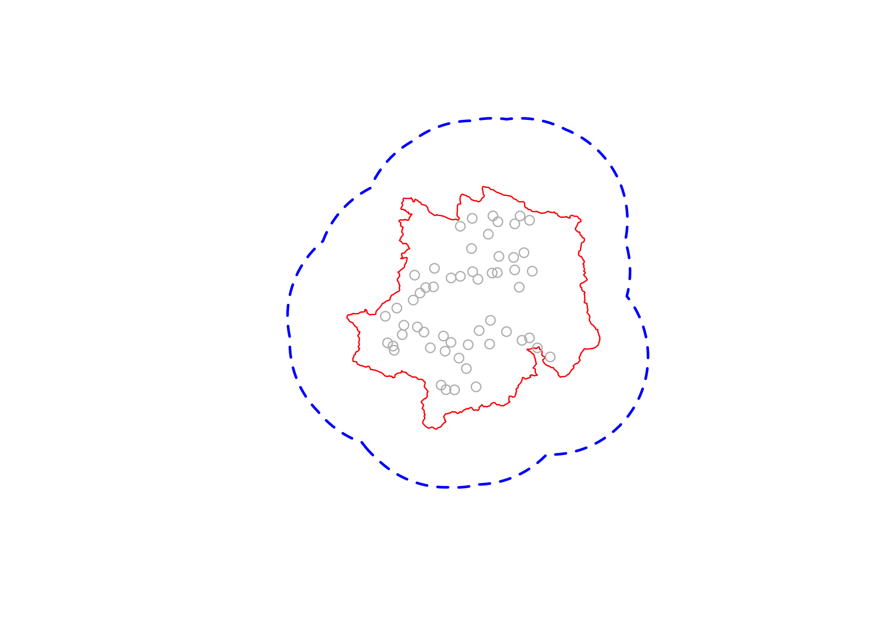
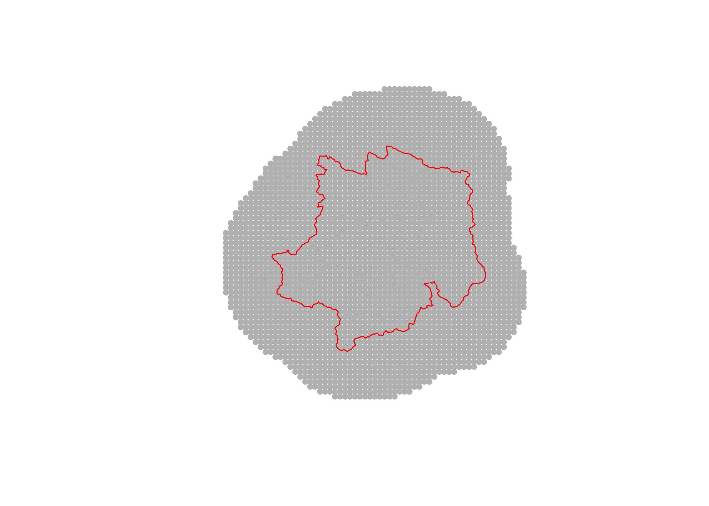
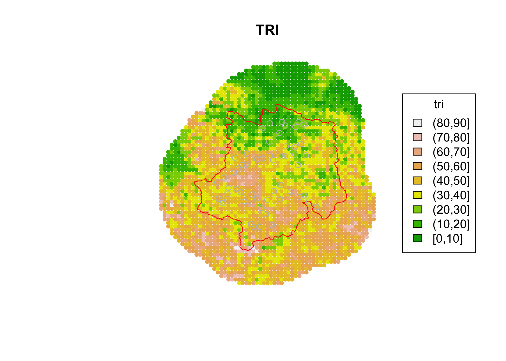
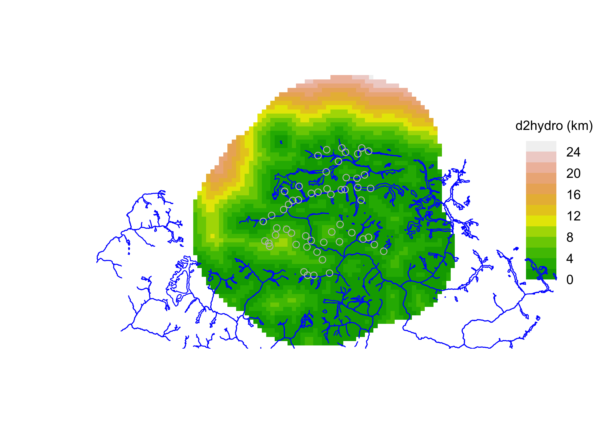
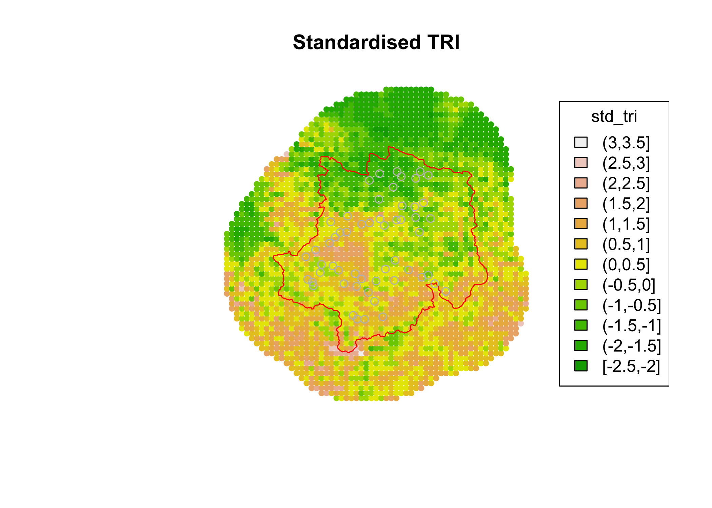
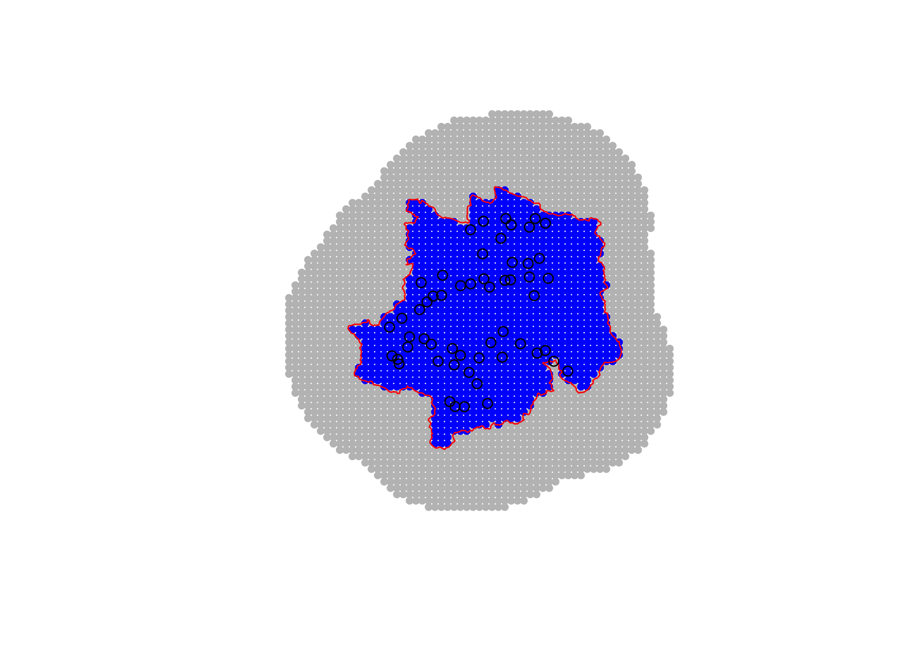

# Packages needed
library(dplyr)
library(terra)
library(secr)
library(sf)
capthist_file <- "tutorials/namkha_basic/output/namkha_basic_secr_inputs_capthist.RData"
output_file <- "tutorials/namkha_basic/output/namkha_basic_secr_inputs_mask.RData"
# Load the traps object created in script 01
load(capthist_file)Create the spatial mask
1 Covered in this tutorial
- Load the camera-trap inputs created in the capture-history tutorial
- Read the Namkha survey boundary
- Create a buffered region around the camera traps
- Build an
secrmask as a regular grid of points - Add spatial covariates to the mask
- Check and scale mask covariates
- Create the mask subsets used later for model fitting and prediction
2 Introduction
Spatial capture-recapture models estimate animal density over a defined region. In secr, that region is represented by a mask: a grid of points covering possible animal activity-centre locations. Instead of integrating over continuous space, secr sums over the points in the mask. The mask therefore defines both the spatial extent of the analysis and the spatial resolution used for model fitting and prediction.
The mask should cover all plausible locations for animals that could have been detected by the camera array. If it is too small, some animals whose activity centres are outside the mask but within detection range of the traps are excluded from the likelihood. If it is unnecessarily large or very fine, model fitting becomes slower. The mask spacing and buffer distance are therefore practical modelling choices.
In this tutorial we create a general mask over the union of the Namkha survey area and a buffer around the camera traps. We then add two spatial covariates:
tri: Terrain Ruggedness Index, read from a rasterd2hydro: distance from each mask point to the nearest watercourse
The final objects saved here are used by the model-fitting and results tutorials.
3 Preparations
We begin by loading the packages, setting file paths, and loading the capture-history inputs created in the previous tutorial. The loaded file contains the traps object and the coordinate reference system my_crs.
The mask settings control the resolution and extent of the grid. mask_spacing is the distance in metres between neighbouring mask points. mask_buffer is the distance in metres around the traps that is included in the trap-buffer part of the region.
# User settings for mask spacing and trap buffer distance
mask_spacing <- 1500
mask_buffer <- 25000A 1500 m spacing gives a moderately coarse grid for a workshop example. A smaller spacing gives a finer approximation to continuous space, but increases the number of mask points and therefore the computing time for model fitting. The 25 km buffer is intended to cover activity centres for animals that could plausibly be detected by the camera array.
4 Read the survey area and trap data
The survey boundary is stored as a shapefile. We read it with sf::st_read(), drop any Z dimension with st_zm(), and transform it to the projected coordinate reference system used for the traps. Using a projected CRS in metres is important because distances, buffers, and mask spacing are all defined in metres.
# Read the Namkha boundary and project it to the UTM CRS used in the analysis
survey_area <- st_read("tutorials/namkha_basic/data/survey_area/Namkha_RM.shp", quiet = TRUE) %>%
st_zm() %>%
st_transform(my_crs) %>%
st_geometry()Next we turn the secr traps object into an sf point object. We then create a 25 km buffer around each trap and combine those buffers into a single polygon. The mask will include this trap buffer because detected animals may have activity centres outside the administrative survey boundary but still within range of the cameras.
# Turn traps into spatial points and create a buffer around all camera locations
traps_sf <- st_as_sf(traps, coords = c("x", "y"), crs = my_crs)
traps_buffer <- traps_sf %>%
st_buffer(mask_buffer) %>%
st_union() %>%
st_geometry()The full region used to generate candidate mask points is the union of the Namkha survey area and the trap buffer. This gives a single polygon covering both the area for later prediction and the area needed for model fitting around the detectors.
# The full region is the union of the Namkha boundary and the trap buffer
full_region <- st_union(survey_area, traps_buffer)The following plot checks that the boundary, trap locations, and buffered region line up correctly.
# Plot to check everything is correct
plot(full_region, border = "white")
plot(survey_area, border = "red", add = TRUE)
plot(traps_sf, add = TRUE, col = "gray")
plot(full_region, border = "blue", add =TRUE, lty = 2, lwd = 2)
The red outline is the Namkha survey area. The grey points are camera locations. The dashed blue outline is the full region over which the general mask will be created.
5 Create the full secr mask
The mask is a regular grid of points. We first create candidate grid points over a buffered version of full_region, then keep only points that fall inside full_region.
# Create a regular grid of candidate mask points over the full region
mask_grid <- st_make_grid(
st_buffer(full_region, 10000),
cellsize = c(mask_spacing, mask_spacing),
what = "centers"
)
# Keep only the grid points falling inside the full region
mask_points <- mask_grid[full_region] %>%
st_as_sf() %>%
cbind(st_coordinates(.)) %>%
st_drop_geometry() %>%
dplyr::select(x = X, y = Y)secr::read.mask() converts the data frame of coordinates into an object with class mask. The spacing attribute is used later by secr when calculating areas and abundance.
# Convert the point coordinates to a secr mask object
mask <- read.mask(data = mask_points, spacing = mask_spacing)
plot(mask)
plot(survey_area, border = "red", add = TRUE)
plot(traps_sf, add = TRUE, col = "gray")
summary(mask)Object class mask
Mask type user
Number of points 2966
Spacing m 1500
Cell area ha 225
Total area ha 667350
x-range m 510742.4 600742.4
y-range m 3292715 3385715
Bounding box
x y
1 509992.4 3291965
2 601492.4 3291965
4 601492.4 3386465
3 509992.4 3386465The area represented by a mask can be calculated from the area attribute and the number of mask points. secr stores mask cell area in hectares, so dividing by 100 converts hectares to square kilometres.
attr(mask, "area") * nrow(mask) / 100[1] 6673.56 Add spatial covariates
Spatial covariates describe how habitat or landscape features vary across the mask. They are used in density models, for example to ask whether snow leopard density changes with ruggedness or distance to water.
This tutorial adds covariates to the full mask before creating smaller mask subsets. That means the same covariate definitions and scaling are used consistently across the model-fitting and prediction masks.
6.1 Terrain Ruggedness Index
Terrain Ruggedness Index is stored as a raster. We read it with terra::rast(), project it to the same CRS as the mask, and name the raster layer tri.
# Read the TRI raster and project it to the analysis CRS
tri <- rast("tutorials/namkha_basic/data/spatial_covs/TRI_Namkha.tif")
tri <- project(tri, y = my_crs)
names(tri) <- "tri"Rasters are often much finer than the mask grid. For a mask covariate, the value in the vicinity of the mask point is often more useful than the value of a single raster cell exactly underneath that point. Here we aggregate the raster so its resolution is closer to the mask spacing, then add it to the mask with addCovariates().
# Aggregate the raster so its resolution is closer to the mask spacing
aggregate_factor <- max(1, floor(mask_spacing / max(res(tri))))
tri <- aggregate(tri, fact = c(aggregate_factor, aggregate_factor))
mask <- addCovariates(mask, tri)We can plot the new covariate to check that it has been added and that the spatial pattern is plausible.
plot(mask, covariate = "tri")
plot(survey_area, border = "red", add = TRUE)
plot(traps_sf, add = TRUE, col = "gray")
title("TRI")
6.2 Distance to water
The watercourse layer is stored as a shapefile. We read it, transform it to the analysis CRS, and combine all features into one geometry. Then we calculate the distance from each mask point to the nearest watercourse.
# Read the watercourse layer and calculate distance from each mask point to water
hydro <- st_read("tutorials/namkha_basic/data/spatial_covs/Namkha_hydro.shp", quiet = TRUE) %>%
st_transform(crs = my_crs) %>%
st_union()
mask_sf <- st_as_sf(mask, coords = c("x", "y"), crs = my_crs)
covariates(mask)$d2hydro <- as.numeric(st_distance(mask_sf, hydro))Distance values are in metres because the objects are in a projected CRS. The plot below uses a scale factor of 0.001 so the legend is in kilometres.
plot(mask, covariate = "d2hydro", scale = 0.001, dots = FALSE, title = "d2hydro (km)")
plot(st_geometry(hydro), add = TRUE, border = "blue")
plot(traps_sf, add = TRUE, col = "gray")
7 Check and scale covariates
Before fitting models, it is important to check for missing covariate values. A small number of missing values can occur near raster edges or where spatial data do not fully cover the mask. A large number of missing values usually indicates a projection, extent, or data-coverage problem.
# Print missing-value counts and proportions for mask covariates
covariate_missing <- data.frame(
covariate = names(covariates(mask)),
n_missing = sapply(covariates(mask), function(x) sum(is.na(x))),
prop_missing = sapply(covariates(mask), function(x) mean(is.na(x)))
)
print(covariate_missing) covariate n_missing prop_missing
tri tri 0 0
d2hydro d2hydro 0 0# Stop if more than 20% missing on any covariate
if (any(covariate_missing$prop_missing > 0.2)) {
stop("At least one mask covariate has more than 20% missing values.")
}If a covariate has a small number of missing values, this script replaces them with the covariate mean. This keeps the tutorial workflow moving while still stopping when missingness is substantial.
# Replace any missing covariate values with the mean of that covariate
for (covname in names(covariates(mask))) {
if (anyNA(covariates(mask)[, covname])) {
covariates(mask)[, covname][is.na(covariates(mask)[, covname])] <-
mean(covariates(mask)[, covname], na.rm = TRUE)
}
}Numeric covariates are then standardised by subtracting their mean and dividing by their standard deviation. Standardised covariates are useful in model fitting because coefficients are easier to compare and numerical optimisation is often more stable.
The scaling values are stored in scaling_df so that the same transformation can be checked or reused later.
# scale any numeric covariates, first find mean and std devs over full mask
scaling_df = data.frame(cov = as.character(), mean = as.numeric(), sd = as.numeric())
for(i in names(covariates(mask))){
if(is.numeric(covariates(mask)[, i])){
newi <- paste0("std_",i)
meani <- mean(covariates(mask)[, i], na.rm = TRUE)
sdi <- sd(covariates(mask)[, i], na.rm = TRUE)
scaling_df = rbind.data.frame(scaling_df, data.frame(cov = i, mean = meani, sd = sdi))
covariates(mask)[, newi] <- (covariates(mask)[, i] - meani) / sdi
}
}
names(covariates(mask))[1] "tri" "d2hydro" "std_tri" "std_d2hydro"scaling_df cov mean sd
1 tri 37.67895 17.04291
2 d2hydro 4312.77199 5237.97285The standardised TRI covariate should have mean close to zero and standard deviation close to one.
plot(mask, covariate = "std_tri")
plot(survey_area, border = "red", add = TRUE)
plot(traps_sf, add = TRUE, col = "gray")
title("Standardised TRI")
8 Create the masks used later
The full mask covers the union of the Namkha survey area and the trap buffer. From that full mask we create two subsets:
mask_survey_area: points inside the Namkha survey area, useful for prediction and reporting within the survey boundarymask_model: points inside the trap buffer, used for model fitting
The model-fitting mask is allowed to include points outside the Namkha boundary because animals with activity centres just outside the boundary could still be detected by cameras near the edge.
# Keep a version of the mask restricted to the Namkha survey area
inside_survey_area <- lengths(st_intersects(mask_sf, survey_area)) > 0
mask_survey_area <- subset(mask, subset = inside_survey_area)
# For model fitting, keep all points within the trap buffer, including those outside Namkha
inside_buffer <- lengths(st_intersects(mask_sf, traps_buffer)) > 0
mask_model <- subset(mask, subset = inside_buffer)The following plot compares the two subsets. The blue points are the survey-area mask and the grey points are the model-fitting mask.
plot(mask_model, col = "grey75")
plot(mask_survey_area, col = "blue", add = TRUE)
plot(survey_area, border = "red", add = TRUE)
plot(traps_sf, add = TRUE, col = "black")
Finally, we keep the trap buffer itself because it is useful for later plotting, and save all mask objects needed by the remaining scripts.
# Save the trap buffer separately because it is useful for later plotting
all_sess_masks <- traps_buffer
# Save all mask objects needed by later scripts
save(
mask, mask_survey_area, mask_model,
mask_spacing, mask_buffer,
scaling_df,
survey_area, traps_buffer, all_sess_masks, full_region,
file = output_file
)9 What comes next
The model-fitting script uses the ch object created in the first tutorial and the mask_model object created here. The model-results script also uses the saved survey-area mask and trap buffer for mapping and summarising density predictions.